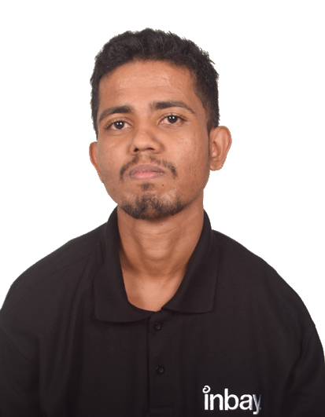

Randeer Lalanga
LINUX, WINDOWS, CLOUD & DEVOPS ENGINEER
Working as a System Support Engineer at Inbay SL.
👉 randeerlalanga92@gmail.com
Work History
🚧 ASSOCIATE SYSTEMS ENGINEER | Inbay SL
June 2020 - Present
Inbay is a MSP that support most UK base customers.
- Server Experiences: Windows Server: 2008, 2008R2, 2011SBS, 2012, 2012R2, 2016, 2019, 2022, Ubuntu, Centos 6, 7, 8, RedHat, Debian.
- Windows server roles: AD DS, DNS, DHCP, IIS, RDS, HV, Roung and Remote Access, Failover Cluster, File and Storage, AD CS
- Cloud Experiences: AWS, Azure, GCP, Digital Ocean, Linode.
- Windows and Linux patch management.
- Server Out-of-Band Management: iLO, iDrac, imm.
- Backup Restoration Solutions: Shadowprotect, StorageCraft ImageManager, Windows Backup, Azure Backup, Veeam Backup & Replicaon, Acronis, CloudBerry, Datto.
- SaaS soluons: O365, Google Workspace, Zoho, Datto Workspace.
- Cloud-based VDI: Amazon WorkSpaces, Azure Virtual Desktops.
- Virtualizaon products: Hyper-V, VMware, RedHat Virtualizaton (RHV-KMV), Proxmox
- SQL server: SP/GDR/CU Updates
🚧 INSTRUCTOR | YOUTUBE, UDEMY, TEACHABLE
11/2019 - Present
Produced content showcasing new tech, tutorials & interviews with top developers.
- 166,000+ Youtube Subscribers
- 30,000 course copies sold
- 12+ Million views on Youtube
- Made regular contributions to Traversy Medias youtube channel (1.9m Subscribers)
- Tutorial videos included projects such as social networks, Ecommerce, real time video, stripe & paypal integrations and more
🚧 SENIOR DEVELOPER | FOI LABS
10/2017 - 10/2019
Designed and developed a laboratory management system. My system
provided an interface for lab technicians and customers to view and
track data from samples tested in the lab.
- Designed prototype & pitched original idea for new lab management system (LIMS)
- Built entire code base and brought version 1 of LIMS system to market as a solo developer
- Onboarded and trained customers (Webinars & Conferences)
- Managed a small team of developers in expansion of LIMS system
🚧 DIGITAL MARKETER | UNIFIVE DIGITAL
2014 - 2017
Started a digital agency building websites and marketing for
local businesses. Mostly Wordpress sites with small modifications to
themes.
- Organized SEO & SEM campaigns on a local and global scale.
- Saved a customer $110k a year by reducing Adwords CPC cost with optimization
- 70 + websites built with my small team of developers and freelancers